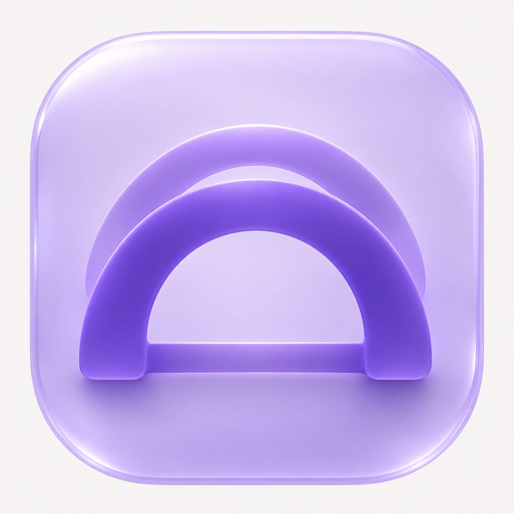

Parallel work. One calm bridge.
Three distinct lanes rise into a shared span. The mark connects parallel worktrees to a calm, reachable surface.
The same enclosed charcoal icon works on light and dark desktops.

View at 100% browser zoom. Retina displays use the matching 2× source.
Single-colour vectors, shown as native dark or light ink. Filled means running.
#6550C7 · 5.96:1 on white#B3A0FF · 7.93:1 on charcoal#F5F4F7#19171F